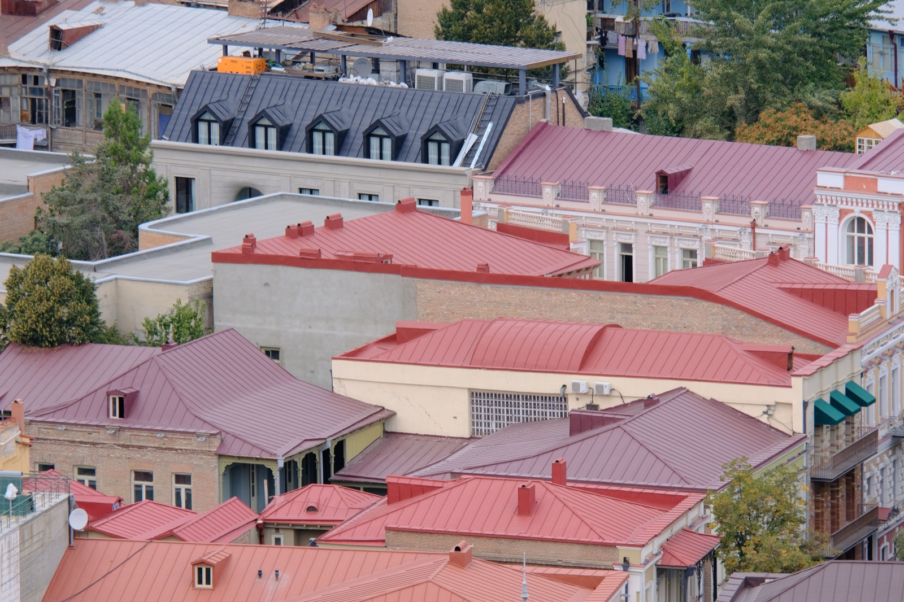

Metal Roofing
Standing-seam and metal-panel roofs: the tropical front-runner. Reflects heat, sheds rain fast, holds through hurricanes, and lasts 40 to 70 years. Here's what it costs and why it wins.

Of all the roofs you can put on a tropical house, metal comes closest to doing everything. A quality standing-seam roof bounces the sun off instead of soaking it up, clears a downpour in seconds, and carries the best hurricane-wind ratings of any common roof. It also runs 40 to 70 years, which for most homes means it's the last roof they'll need. The reason it holds up is the concealed fastener: nothing punches through the weather surface to leak or shake loose in the wind.
Two kinds of metal roof
Metal roofing splits into two families. Standing seam locks interlocking vertical panels together and hides the fasteners inside raised seams, so nothing penetrates the surface water runs across. That's why it's the premium, leak- and wind-resistant choice. Exposed-fastener panels, the corrugated and ribbed sheets covered on our tin roof page, screw straight through the face and rely on rubber washers that age over time. Panels are usually steel (galvanized or Galvalume), aluminum near the coast where salt is a problem, or occasionally zinc and copper. On a house they sit over a solid deck with underlayment and insulation.
What it costs
Budget roughly $$ to $$$. Standing seam runs about $80 to $160 per square metre installed, or $8 to $15 a square foot; exposed-fastener metal costs noticeably less. That's more than shingles upfront, but with a 40-to-70-year life it usually works out cheaper per year of service, because you buy one roof instead of three. Near the ocean, add for aluminum or premium coatings to beat salt corrosion. Figures are approximate and shift with the metal, the profile, and the region.
Metal roofing, weighed up
| Factor | Rating | Notes |
|---|---|---|
| Cost | 🟡 | Higher upfront, cheapest per year of life |
| Lifespan | 🟢 | 40 to 70 years, often the last roof |
| Heat/UV | 🟢 | Reflective, keeps the house cooler |
| Water shedding | 🟢 | Clears heavy rain instantly |
| Hurricane/wind | 🟢 | Best in class when properly anchored |
| Salt/coastal | 🟡 | Use aluminum or coated steel near the sea |
| Noise | 🟡 | Quiet over deck and insulation, loud if bare |
| Weight | 🟢 | Light, easy on the structure |
| Permitting/finance | 🟢 | Standard and well understood |
How hard is it to install?
Metal is a job for a professional crew, not a weekend. Standing seam in particular needs specialists and roll-forming gear, and the whole case for it rests on getting the edges and anchoring right, because the perimeter is where wind first gets under a roof. The good news locally is that skilled metal roofers are common across Panama and Costa Rica, the materials are easy to source, and it permits and finances without a fuss. Hire a crew that knows coastal detailing and high-wind fastening and you end up with a roof that outlasts almost everything beneath it.
Want a roof you'll never think about again?
SORA builds fixed-price homes for foreign buyers in Panama and Costa Rica. We pick the roof that suits your site, budget, and how long you plan to keep the house, and we build it to take the tropics.
See 2026 build costs →Frequently asked questions
How long does a metal roof last?
A quality standing-seam metal roof lasts 40 to 70 years, and premium metals like zinc or copper longer still. Exposed-fastener panel roofs last less, since the gaskets around the screws age first, but they still typically outlast asphalt shingles by decades.
Is a metal roof good in a hurricane?
Yes. A properly installed standing-seam roof carries some of the best wind ratings of any residential roof, because there are no exposed fasteners to work loose and the panels lock into each other. The key is anchoring the edges and following the manufacturer's high-wind spec.
Does a metal roof make the house hotter?
The opposite. Metal reflects a large share of the sun's heat rather than absorbing it like a dark shingle, so with a reflective finish and proper insulation a metal roof keeps interiors cooler and cuts cooling bills, which matters a lot in the tropics.
Sources & verification
Figures in this guide were checked against primary and authoritative sources on 27 July 2026. Immigration, tax, and cost figures change — always confirm the current rules with the official body or a licensed professional before acting.
- Bob Vila — metal roofing cost, types & lifespan
- Metal Roofing Alliance — standing seam & wind performance